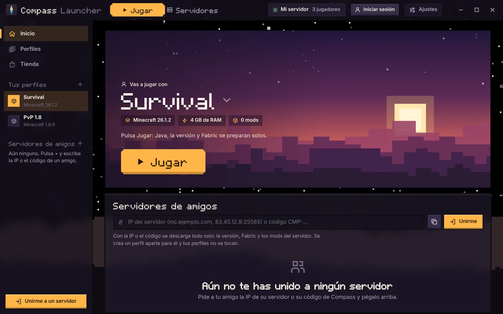
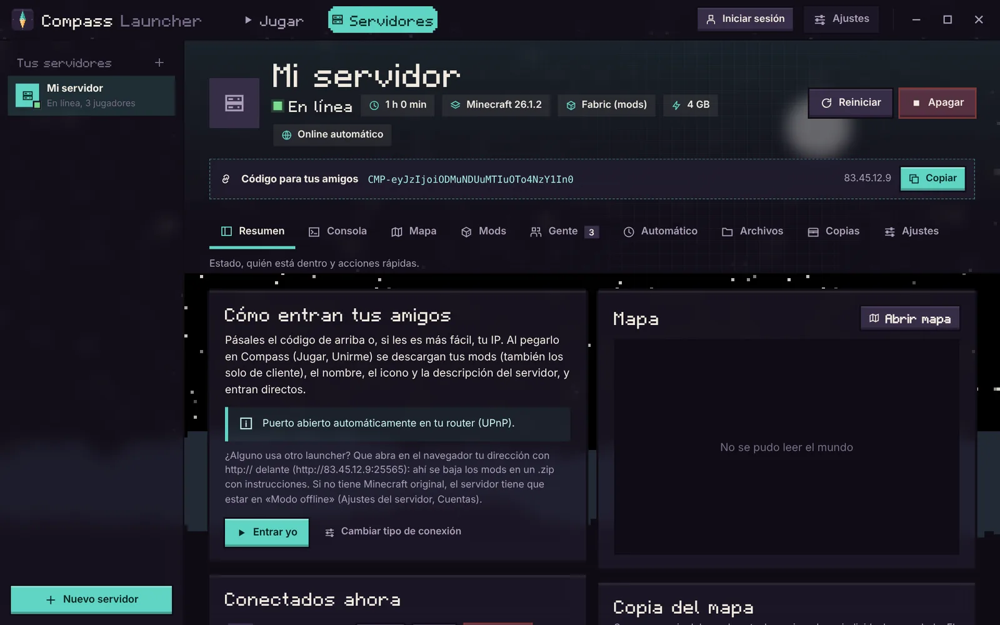
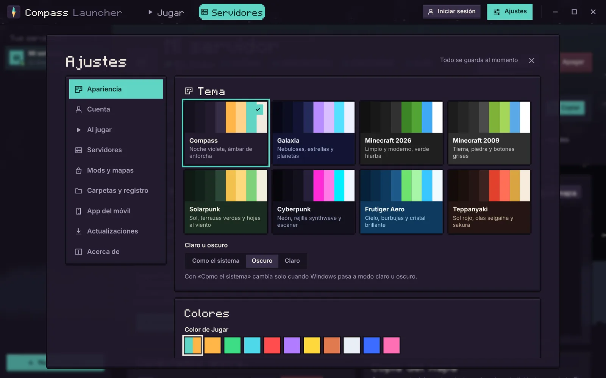
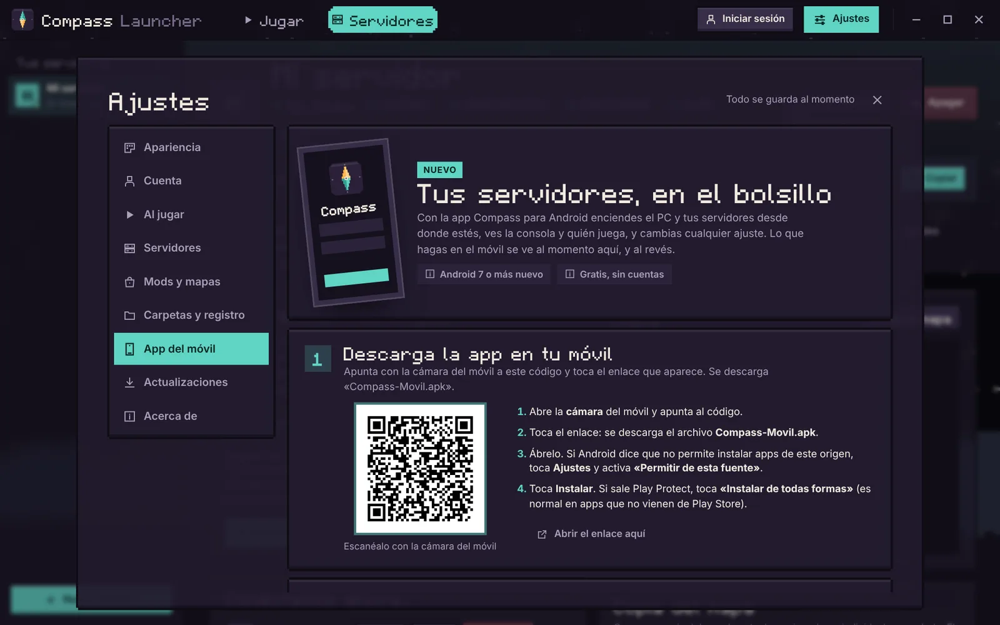
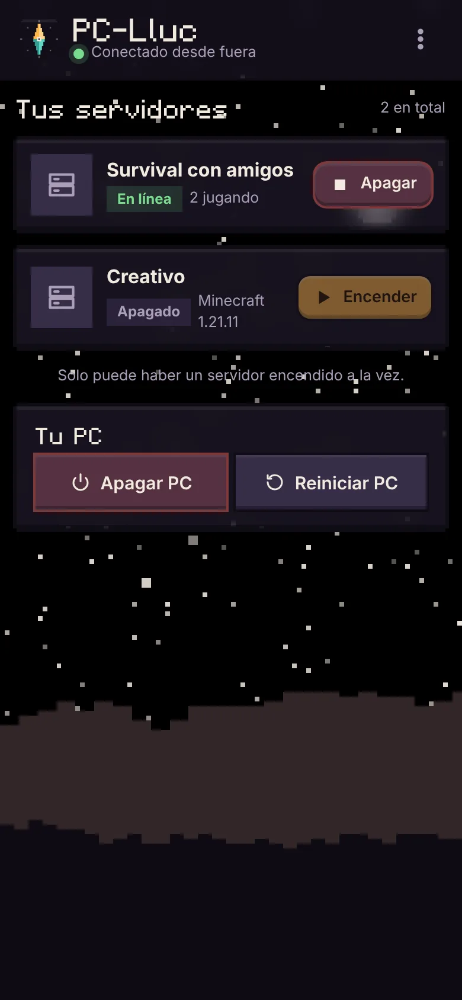
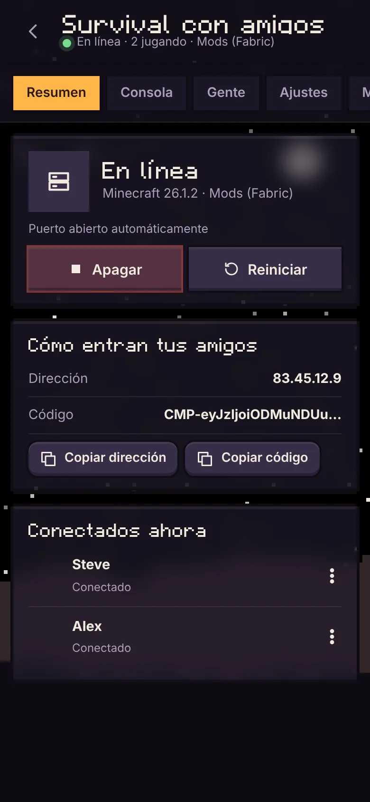
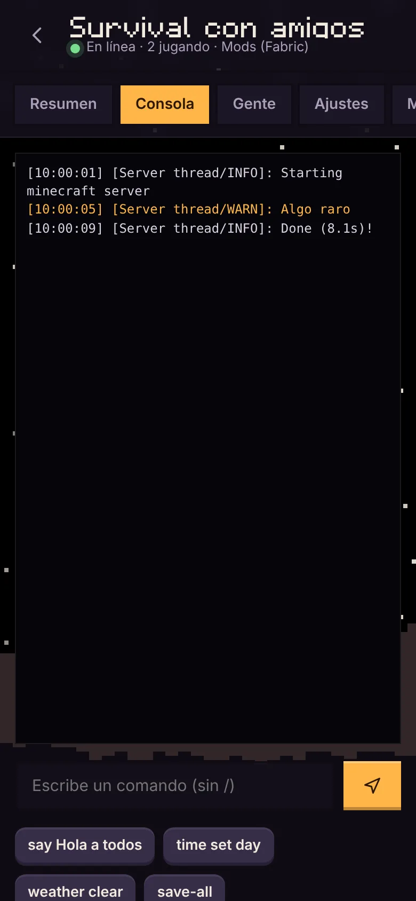

Qué hace
Jugar con amigos
Pega la IP o el código de tu amigo y Compass baja la versión y sus mods.
Tus propios servidores
Fabric, Paper o los dos a la vez. Consola, copias, mundos y modo 24/7. Abre el puerto por ti.
Tienda de mods
Mods, shaders, resource packs, modpacks y mapas de Modrinth y CurseForge, con las dependencias puestas solas.
Temas y fondos
Ocho temas pixel art con fondos animados, en claro y oscuro. Zoom con la C y vista libre con el Alt, como en Lunar.
App para el móvil
Enciende tu PC y tus servidores desde donde estés. Los cambios se ven al momento en los dos.
Siempre al día
Compass y la app del móvil se actualizan solos.
Así se ve







Cómo empezar
- Descarga el instalador y ábrelo. Se instala solo y crea un acceso directo. Si Windows avisa («Windows protegió su PC»), pulsa Más información › Ejecutar de todas formas: es normal en programas pequeños sin firma de pago.
- Inicia sesión con tu cuenta de Microsoft (la de Minecraft).
- Pulsa Jugar: Java, la versión y Fabric se preparan solos. Para jugar con un amigo, pega su IP o su código en «Unirme».
App para Android
Con la app Compass controlas tus servidores desde el móvil: encender y apagar, ver la consola y quién juega, cambiar ajustes, mods y copias. Y con Wake-on-LAN puedes encender el PC aunque estés fuera de casa.
- Descarga Compass-Movil.apk (QR o botón) y ábrelo. Si Android lo pide, activa Permitir de esta fuente.
- En el PC: Compass › Ajustes › App del móvil, activa el control y escanea el código desde la app.
- Opcional: sigue la guía del paso 4 para que el PC se encienda solo desde el móvil.
Novedades
Cargando versiones…
Todas las versiones
Puedes descargar cualquier versión anterior. Tus perfiles, servidores y sesión se conservan al cambiar de versión.
| Versión | Fecha | Windows | Portable | Android |
|---|---|---|---|---|
| Cargando… | ||||
Acerca de
¡Buenas! Soy luckicla y hago Compass Launcher yo solo, en mis ratos libres, por puro gusto y porque me lo paso bien programando.
Empezó porque quería jugar con mis amigos en nuestro propio servidor con mods sin pelearme con carpetas, versiones ni puertos. Me pareció que molaba y quiero que otra gente pueda usarlo gratis.
No tiene anuncios ni recoge datos de nadie. Si algo falla o se te ocurre alguna idea, dímelo en GitHub y le echo un ojo.
Parte del proyecto lo he hecho con ayuda de IA (Claude Opus 5.5).